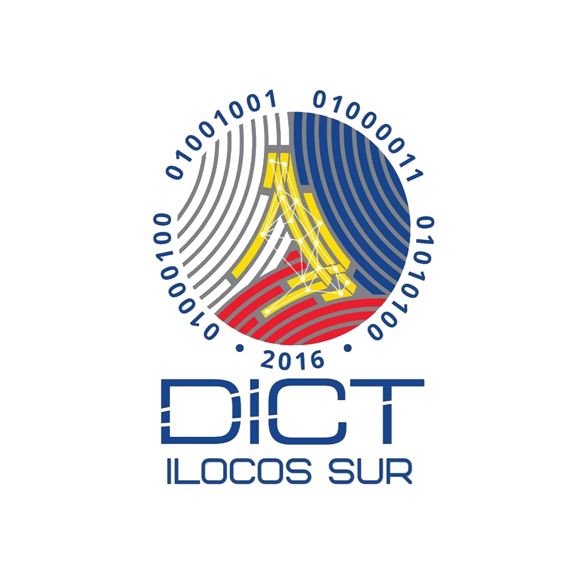
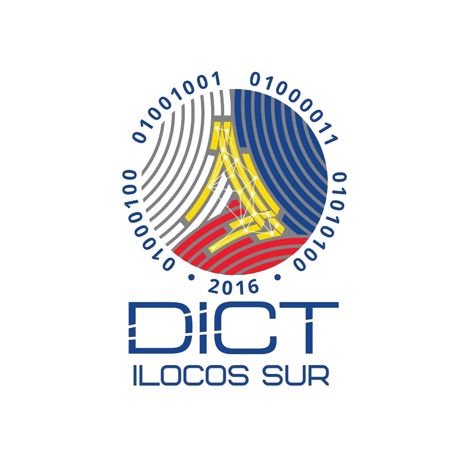

Mandate, Powers and Functions
MANDATE
The Department of Information and Communications Technology (DICT) shall be the primary policy, planning, coordinating, implementing, and administrative entity of the Executive Branch of the government that will plan, develop, and promote the national ICT development agenda. (RA 10844)
POWERS AND FUNCTIONS
I. Policy and Planning
(a) Formulate, recommend and implement national policies, plans, programs and guidelines that will promote the development and use of ICT with due consideration to the advantages of convergence and emerging technologies;
(b) Formulate policies and initiatives, in coordination with the Department of Education (DepED), the Commission on Higher Education (CHED), and the Technical Education and Skills Development Authority (TESDA), to develop and promote ICT in education consistent with the national goals and objectives, and responsive to the human resource needs of the ICT and ICT-enabled services (ICT-ES) sectors;
(c) Provide an integrated framework in order to optimize all government ICT resources and networks for the identification and prioritization of all E-Government systems and applications as provided for the E-Government Masterplan and the Philippine Development Plan (PDP);
II. Improved Public Access
(d) Prescribe rules and regulations for the establishment, operation and maintenance of ICT infrastructures in unserved and underserved areas, in consultation with the local government units (LGUs), civil society organizations (CSOs), private sector, and the academe;
(e) Establish a free internet service that can be accessed in government offices and public areas using the most cost-effective telecommunications technology, through partnership with private service providers as may be necessary;
III. Resource-sharing and Capacity Building
(f) Harmonize and coordinate all national ICT plans and initiatives to ensure knowledge, information and resource-sharing, database-building and agency networking linkages among government agencies, consistent with E-Government objectives in particular, and national objectives in general;
(g) Ensure the development and protection of integrated government ICT infrastructures and designs, taking into consideration the inventory of existing manpower, plans, programs, software, hardware, and installed systems;
(h) Assist and provide technical expertise to government agencies in the development of guidelines in the enforcement and administration of laws, standards, rules, and regulations governing ICT;
(i) Assess, review and support ICT research and development programs of the government in coordination with the Department of Science and Technology (DOST) and other institutions concerned;
(j) Prescribe the personnel qualifications and other qualification standards essential to the effective development and operation of government ICT infrastructures and systems;
(k) Develop programs that would enhance the career advancement opportunities of ICT workers in government;
(l) Assist in the dissemination of vital information essential to disaster risk reduction through the use of ICT;
(m) Represent and negotiate for Philippine interest on matters pertaining to ICT in international bodies, in coordination with the Department of Foreign Affairs (DFA) and other institutions concerned;
IV. Consumer Protection and Industry Development
(n) Ensure and protect the rights and welfare of consumers and business users to privacy, security and confidentiality in matters relating to ICT, in coordination with agencies concerned, the private sector and relevant international bodies;
(o) Support the promotion of trade and investment opportunities in the ICT and ICT-ES sectors, in coordination with the Department of Trade and Industry (DTI) and other relevant government agencies and the private sector;
(p) Establish guidelines for public-private partnerships in the implementation of ICT projects for government agencies;
(q) Promote strategic partnerships and alliances between and among local and international ICT , research and development, educational and training institutions to speed up industry growth and enhance competitiveness of Philippine workers, firms, and small and medium enterprises in the global markets for ICT and ICT-ES;
V. Cybersecurity Policy and Program Coordination
(r) To formulate a national cybersecurity plan consisting of robust and coherent strategies that would minimize national security risks in order to promote a peaceful, secure, open and cooperative ICT environment;
(s) To extend immediate assistance for the suppression of real-time commission of cybercrime offenses and cyber-attacks against critical infrastructures and/or affecting national security through a computer emergency response team (CERT);
(t) To provide pro-active government countermeasures to address and anticipate all domestic and transnational incidents affecting the Philippine cyberspace and any cybersecurity threats to the country;
(u) To enhance the public-private partnership in the field of information sharing involving cyber-attacks, threats and vulnerabilities, and to coordinate in the preparation of appropriate and effective measures to prevent and suppress cybercrime as provided in R.A. No. 10175
(v) To monitor cybercrime cases being handled by participating law and prosecution agencies, and to facilitate international cooperation on intelligence, investigations, training and capacity building related to cybercrime prevention, suppression, and prosecution;
(w) To coordinate the support participation of the business sector, local government units and nongovernment organizations in cybercrime prevention programs and other related projects;
(x) To recommend the enactment of appropriate laws, issuances, measures and policies;
(y) To call upon any government agency to render assistance in the accomplishment of the Department’s mandated tasks and functions;
(z) To perform all other matters related to cybercrime prevention and suppression including capacity building and such other functions and duties as may be necessary for the proper implementation of R.A. No. 10175;
VI. Countryside Development
(aa) Formulate policies in consultation with local government units and other local stakeholders and line agencies for the implementation of responsive, relevant and comprehensive ICT-related strategies to improve the competitiveness of provincial locations for ICT and ICT-ES industry in order to develop balanced investments between high-growth and economically-depressed areas and to promote the development and widespread use of ICT;
(bb) Develop plans and programs in coordination with LGUs and other local stakeholders and line agencies to ensure that universal access to ICT services and infrastructure are effectively utilized to generate investments and opportunities in the rural area or areas unserved by private sector;
(cc) Assist, guide and support ICT-related activities and initiatives for countryside economic development; and
(dd) Promote and assist LGUs and local stakeholders in developing specialized ICT-enabled investments areas by providing technical and industry-calibrated assistance in the use of ICT for the enhancement of key public services, development and promotion of local arts and culture, tourism, digital literacy, and talent development.
Please click here to download a copy of the DICT’s Mandate, Powers and Functions.

Copyright © Department of Information and Communications Technology of Ilocos Sur. All Rights Reserved 2025


 
